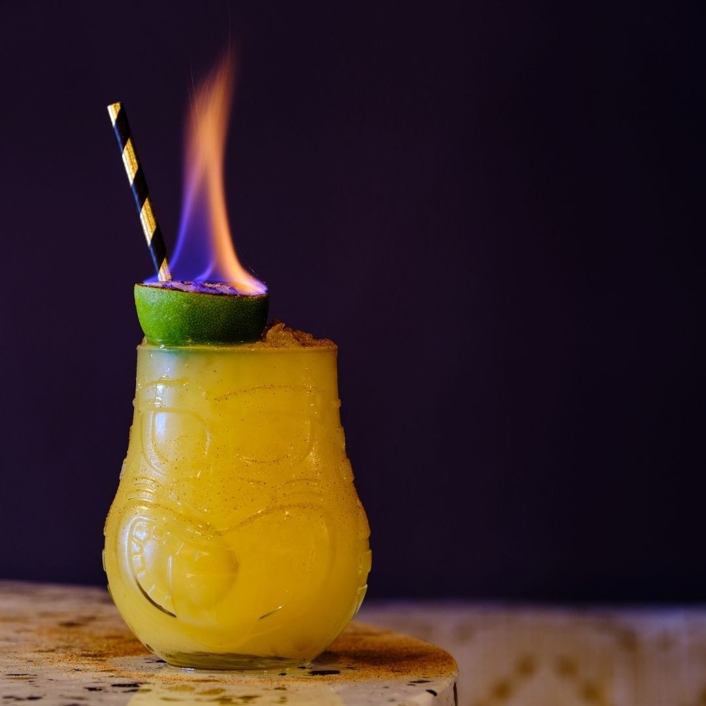

Mangoes on Vacation

A shock to the senses, you could take a sip, catch a plane, and still be discovering flavours
when you land in paradise! It's pretty fly for a Mai Tai..
Sweet, tangy and everything tropical.
One of our own creations this drink combines mango rum, amaretto blanco, mango, orange, lime sherbet and tiki!
Ingredients
- 25ml Deadman's Fingers Mango Rum
- 25ml Adriatico Blanco
- 10ml Lime Sherbet
- 25ml Orange
- 25ml Mango
- Tiki Bitters
- Over-proof Rum
Steps
- Add all ingredients except the over-proof rum to a shaker and shake hard with ice
for 8-10 seconds.
- Strain into a tiki glass and fill with crushed ice.
- Garnish with an orange slice and a lime husk filled with flaming OP rum.
- Dust with cinnamon.
Return to drinks list